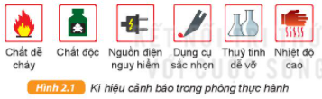

Khi làm thí nghiệm, chúng ta phải tiếp xúc với nguồn điện, nguồn nhiệt, hóa chất, chất dễ cháy nổ, … có thể gây tai nạn do đó cần phải tuân thủ các quy định an toàn trong phòng thực hành và biết nội dung các kí hiệu cảnh báo:
Một số quy định an toàn trong phòng thực hành: - Mặc trang phục gọn gàng, nữ buộc tóc cao, đeo găng tay, khẩu trang, kính bảo vệ mắt và thiết bị bảo vệ khác. - Chỉ tiến hành thí nghiệm khi có người hướng dẫn. - Không ăn uống, đùa nghịch trong phòng thí nghiệm, không nếm hoặc ngửi hóa chất. - Nhận biết các vật liệu nguy hiểm trước khi làm thí nghiệm (vật sắc nhọn, chất dễ cháy nổ, chất độc, nguồn điện nguy hiểm, …) - Sau khi làm xong thí nghiệm, thu gom chất thải để đúng nơi quy định, lau dọn sạch sẽ chỗ làm việc, sắp xếp dụng cụ gọn gàng, đúng chỗ, rửa sạch tay bằng xà phòng.